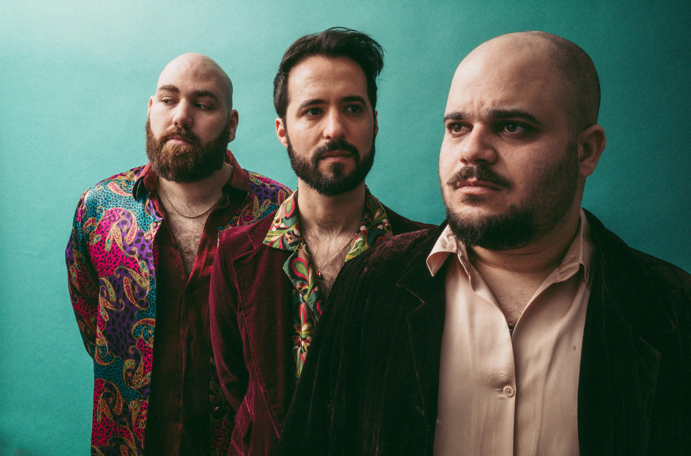
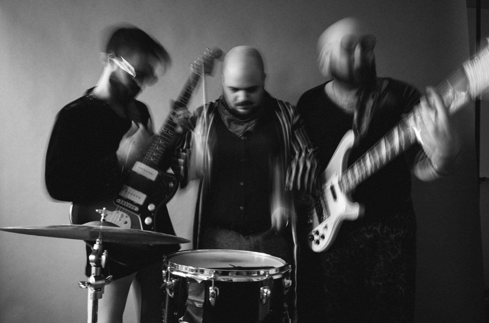
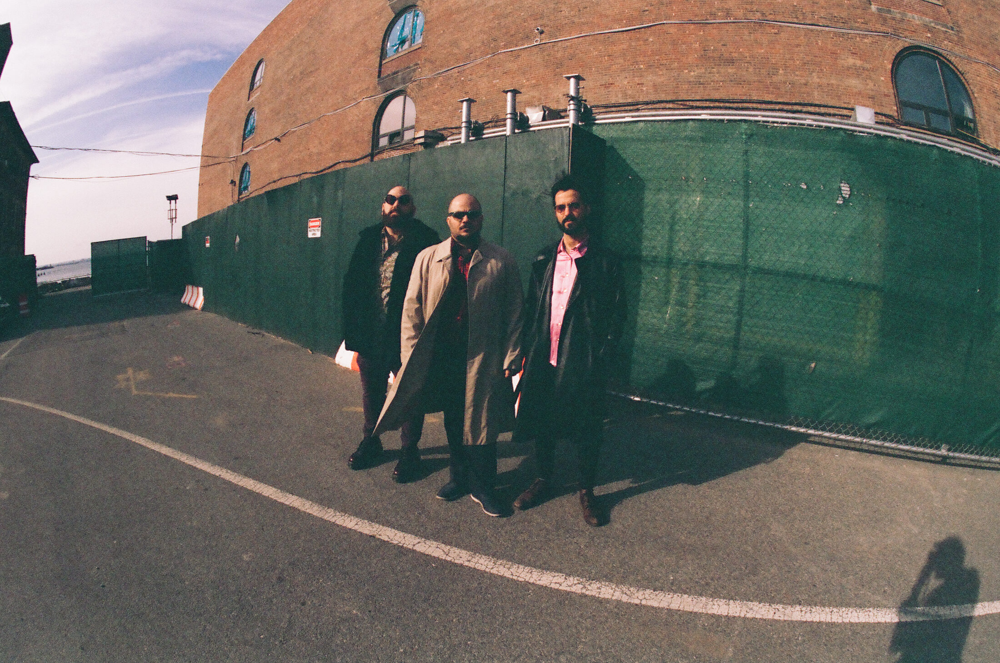
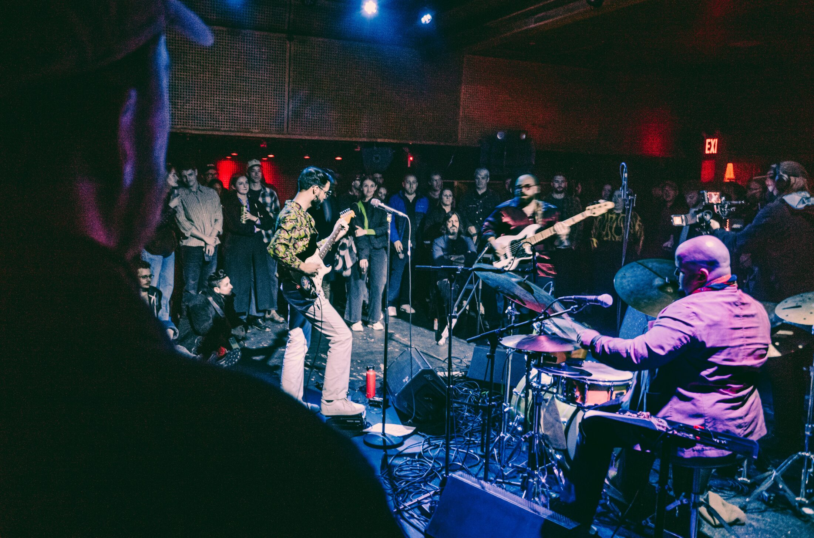

Kadawa
Tal Yahalom • Almog Sharvit • Ben Silashi
“Full of hummable melodies and moments of proud combustion”
Giovanni Russonello, The New York Times
“Pushing the limits of jazz, rock and improvised music”
Ed Enright, DownBeat
“Full of energy and have a multitude of things to say”
Anthony Dean-Harris, Nextbop
“A master class in musical alchemy”
Darryl Sterdan, Tinnitist
KADAWA is a collective trio: guitarist Tal Yahalom, double bassist Almog Sharvit, and drummer Ben Silashi. All three write for the band, and the sets move between ruthless improvisation, hard-driving grooves, and quiet, harmonically rich song forms, alongside their own takes on music by David Bowie, Björk, and Ornette Coleman.
The three met in Tel Aviv at The Center for Jazz Studies and formed the band in 2013, later relocating together to New York, where they graduated from The New School for Jazz and Contemporary Music with honors and now share an apartment in Brooklyn.

KADAWA has toured across Switzerland, Germany, Spain, Italy, the US, and Israel, with appearances including the Detroit Jazz Festival, Jazzwerkstatt Bern, and Teatro CajaGRANADA, and has taught masterclasses at leading music programs in Israel. Their self-titled debut album (2017) features guests Adam O'Farrill, Matt Bumgardner, and Micha Gilad.
This bio is a condensed draft. Happy to swap in the band's official text.

